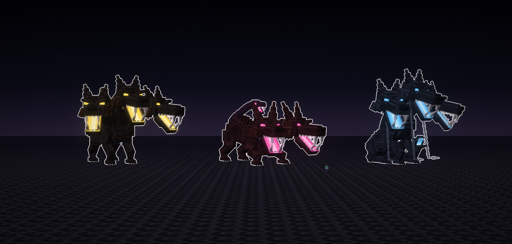
Atalaya · jefe · ficha de diseño · 14-10-2026
Cerbero y sus formas
Cerbero, el perro de varias cabezas que guarda la puerta del Hades, del mismo mito griego que la Gorgona
y el Minotauro. No es un perro agrandado: tiene varias cabezas con las fauces encendidas, la crin de serpientes y
la cola que es una serpiente con su propia boca. Tres formas que cambian la silueta: el Guardián,
Ortro y el Encadenado.
Está hecho con la guía de las fichas de jefes:
- Las cabezas mandan: son grandes, miran a cámara y tienen las fauces abiertas.
- Las bocas arden por dentro con un solo neón, en escalones.
- Las enmarcan las orejas en punta, la gola de pelo y el collar de pinchos.
- El cuerpo es oscuro y enjuto, todo de cajas y con texturas limpias: manchas grandes, escamas en U y remaches
de 2×2.
- Tiene tres formas que se distinguen solo por la silueta.
Es un cuerpo que aún no había en las fichas: un perro de presa de cuatro patas largas. Después de la
Tarasca, que era muy robusta, este va enjuto: el pecho hondo y la cintura recogida. Vive en la orilla del Estigio, entre
rocas y columnas de basalto. Las fotos van sin letras y con el borde blanco, y cada forma tiene su cartel.
Cómo es Cerbero
Cada cabeza
- El cráneo lleva la coronilla en escalón. Bajo el ceño, en ángulo, van los ojos encendidos.
- Las orejas son en punta, en tres escalones, echadas hacia atrás.
- El hocico es largo, con el caballete y la trufa negra.
- Las fauces, abiertas:
- el paladar arde en escalones de luz;
- los dientes van dibujados en hojas, no hechos de cubos;
- lleva dos colmillos arriba y dos abajo;
- el suelo de la boca también arde y, al fondo de la garganta, está el núcleo.
- La gola de pelo en las mejillas y la barba bajo la mandíbula.
El cuerpo
- Los cuellos llevan una crin de mechones por arriba y, cerca de la cabeza, el collar: un aro de metal
con remaches y ocho pinchos.
- El tronco es de perro de presa: el pecho hondo, con la quilla y la pechera de pelo, y la cintura recogida.
- Los hombros y la grupa son de músculo, con una cresta de pelo por el lomo.
- Las cuatro patas son largas y pisan de puntillas, con cuatro dedos y sus uñas.
- La cola es una serpiente de escamas en U. Su cabeza tiene la boca encendida, como las otras.
Las tres formas
Las tres comparten las cabezas y el cuerpo. Cambian la silueta, que se distingue de lejos: ancho con tres
cabezas en abanico, largo y bajo con dos, o sentado y alto con las cadenas.
A · Cerbero, el Guardián · azufre
Cerbero, el Guardián
El de la puerta. Está plantado sobre las cuatro patas, con las tres cabezas abiertas en abanico:
la del medio mira de frente y las de los lados, hacia fuera. Por el lomo le sale la crin de serpientes, cinco que se
abren a los lados, y la cola-serpiente se arquea en alto. Los collares son de bronce. Las bocas arden en amarillo de
azufre, como el aire del Hades.
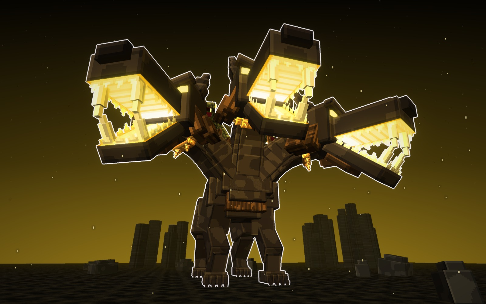
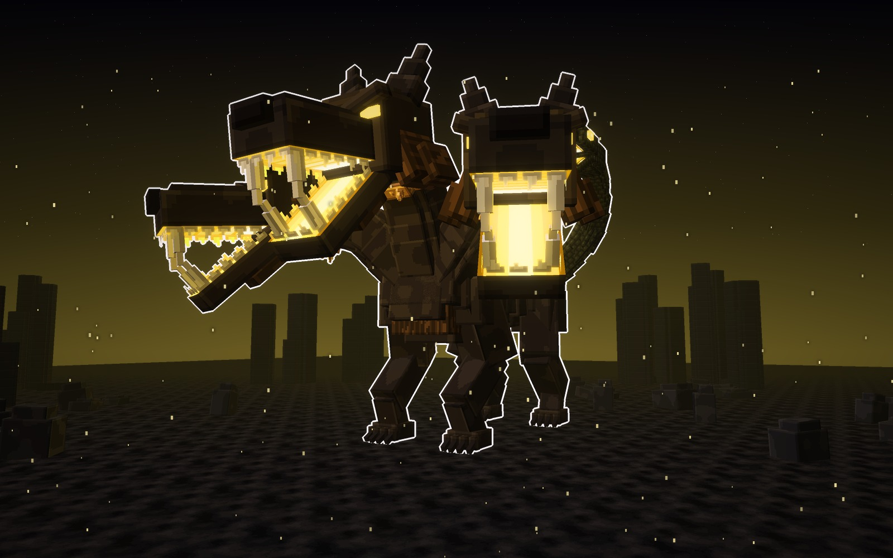
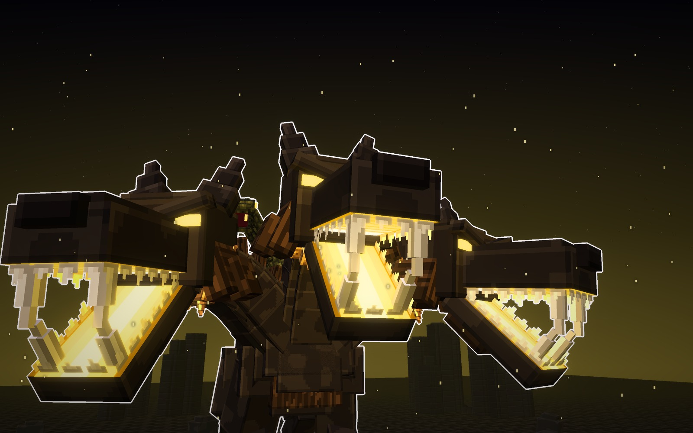
Su forma
- Silueta
- ancha, plantado sobre cuatro patas
- Cabezas
- tres, abiertas en abanico
- Lomo
- la crin de cinco serpientes
- Luz
- azufre
Señas
- La del mito: se lee como Cerbero de un vistazo.
- La más ancha: 37 bloques de cabeza a cabeza.
pelo
serpiente
bronce
luz
B · Ortro, el Perro de Gerión · fucsia
Ortro, el Perro de Gerión
El hermano de Cerbero, el que guardaba el ganado rojo de Gerión. Tiene dos cabezas y es más largo y
flaco. Está agazapado para saltar: el pecho bajo, las patas de delante abiertas y la grupa alta. Tiene las orejas
más largas, la cresta de pelo alta por el lomo y la cola-serpiente que se alza a un lado. Las bocas arden en fucsia.
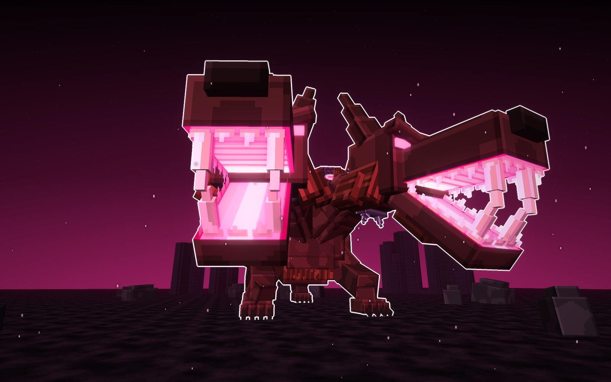
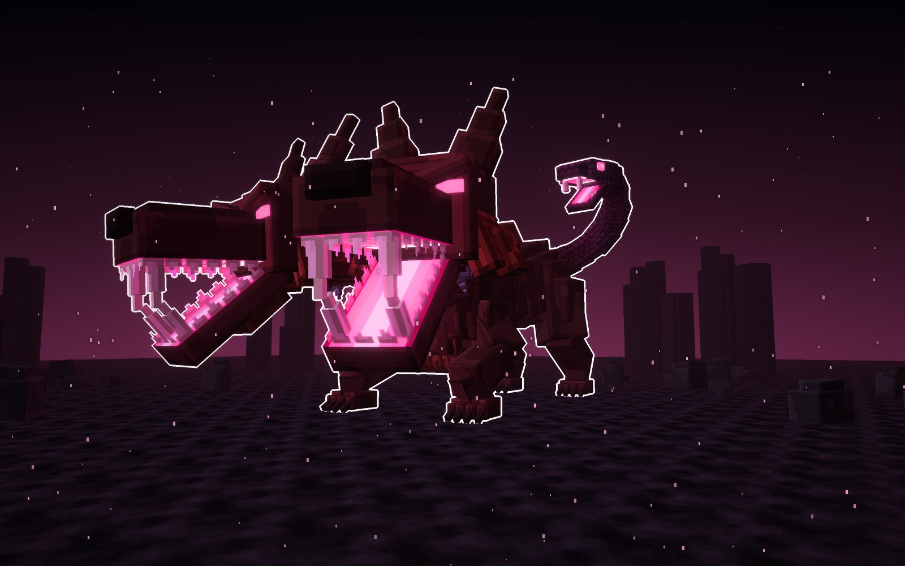
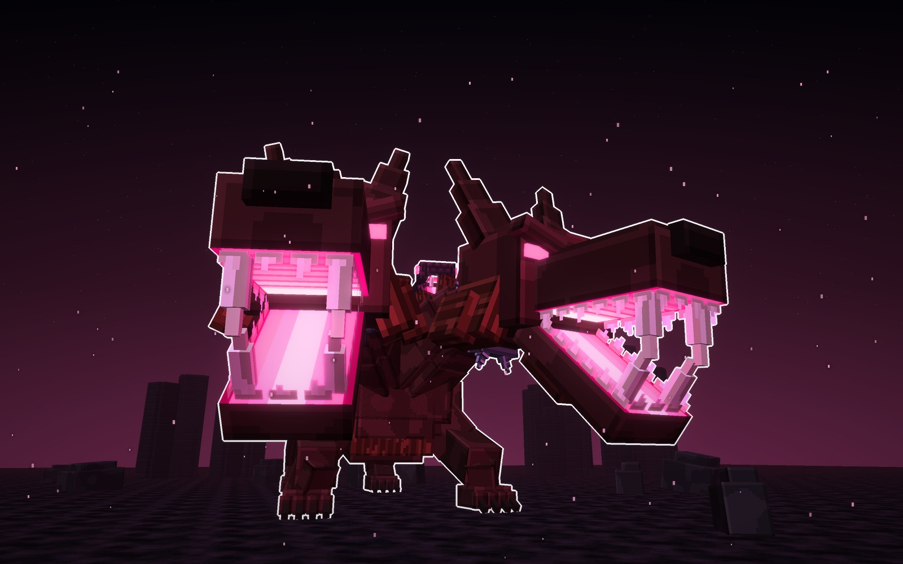
Su forma
- Silueta
- larga y baja, agazapado para saltar
- Cabezas
- dos, juntas y hacia delante
- Lomo
- la cresta de pelo alta
- Luz
- fucsia
Señas
- La más rápida: va siempre a punto de saltar.
- La más larga y la más baja: 49 bloques de largo y 23 de alto.
pelo
serpiente
hierro
luz
C · Cerbero Encadenado · azul de alma
Cerbero Encadenado
El que sacó Heracles del Hades en su último trabajo. Está sentado sobre los cuartos traseros, muy alto,
con las tres cabezas mirando hacia abajo. De los collares le cuelgan las cadenas rotas hasta el suelo, y otras dos
unen los collares. La cola-serpiente se enrosca en el suelo y alza la cabeza delante. Las bocas arden en el azul frío de las
almas.
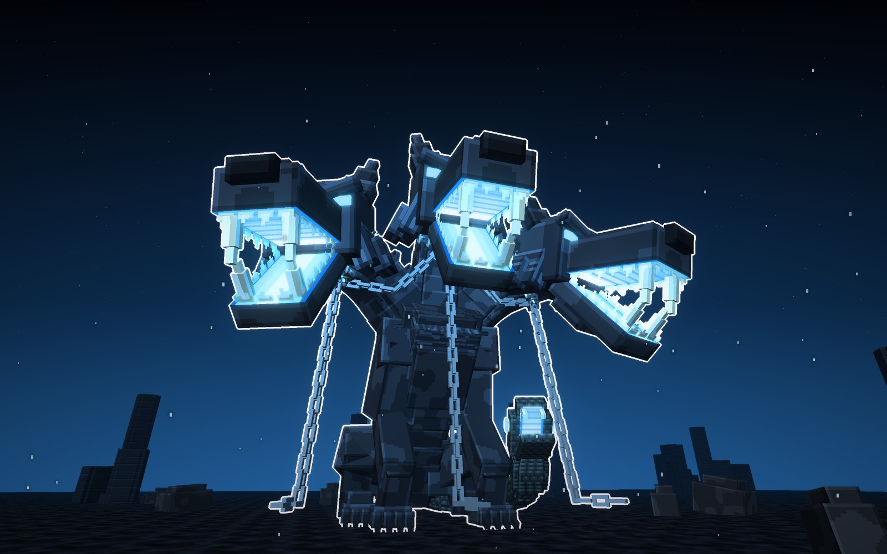
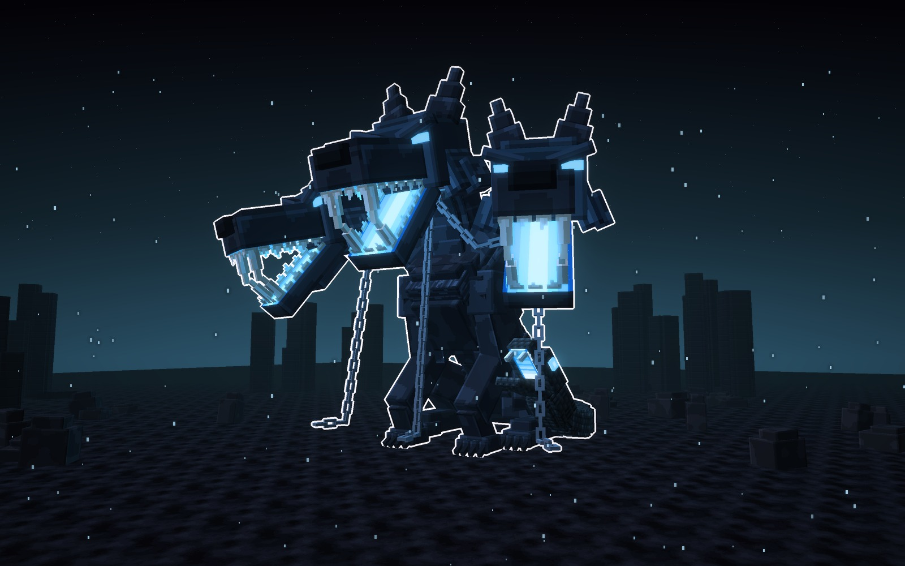
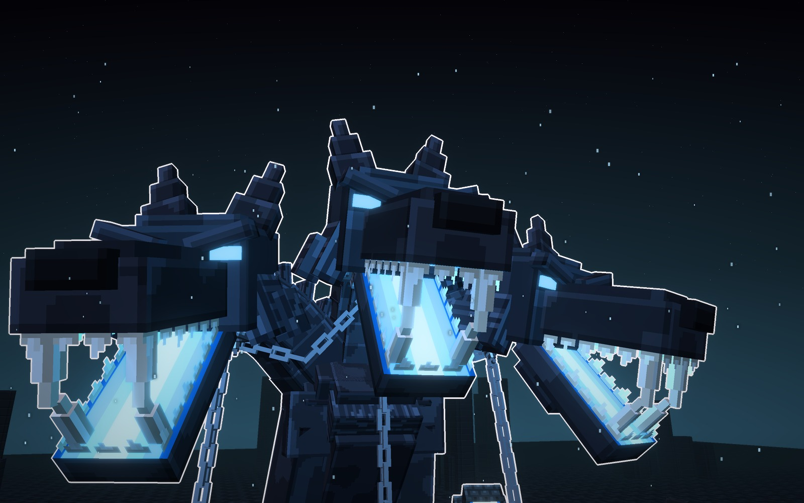
Su forma
- Silueta
- sentado, alto y compacto
- Cabezas
- tres, mirando hacia abajo
- Cadenas
- rotas, de los collares al suelo
- Luz
- azul de alma
Señas
- La más alta: 34 bloques sentado.
- La más corta: 34 de largo, con las bocas a 22 bloques del suelo.
pelo
serpiente
hierro
luz
Las tres, a escala
Las tres juntas, con la misma luz y un jugador delante (1,8 bloques).
el Guardián31 de alto · 37 de ancho · 45 de largo
Ortro23 de alto · 24 de ancho · 49 de largo
el Encadenado34 de alto · 35 de ancho · 34 de largo
Los materiales
Las texturas de cada forma a píxel grande, sin letras. Hay una fila por forma y, de izquierda a derecha, van:
- el pelo corto, con manchas grandes;
- la crin;
- las escamas de las serpientes;
- el collar, con remaches;
- el pincho del collar;
- el paladar;
- el suelo de la boca;
- los dientes, dibujados en hoja;
- el núcleo de la garganta.
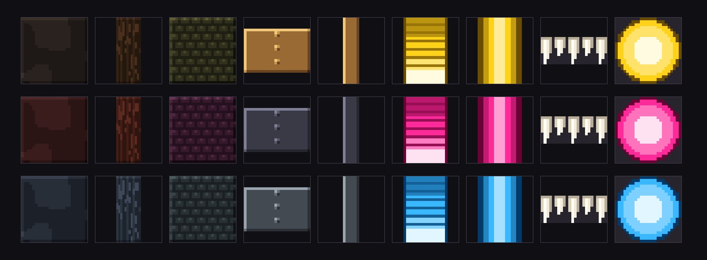
Veredicto de Juan
Lo dio por bueno el 14-10-2026, aunque avisó de que se parece algo a otros jefes: «este sí déjalo en fichas en bosses porque me gustó su diseño y sus tipos».
Bocetos: materiales/generadores/cerbero_modelo.py y cerbero_escenas.py (y jefa_modelo.py, del que toma los tubos
de bloques).